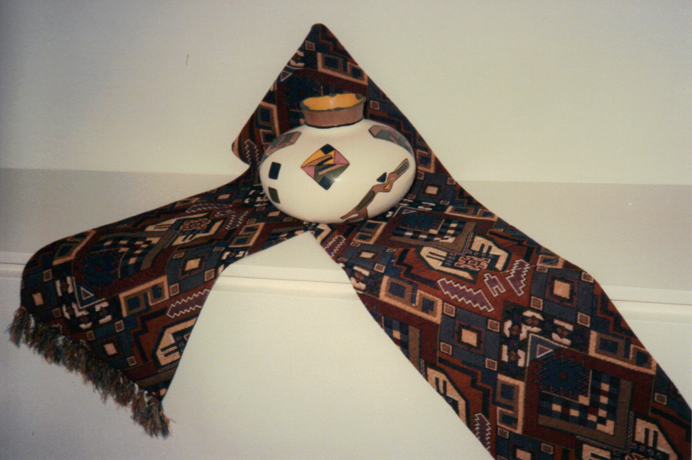

About fifteen years ago, my wife came home from a trip to Turkey with a collection of fabrics — richly patterned textiles with the kind of floral density and earthy color palette that Anatolian weavers have been perfecting for centuries. She brought them back to Alabama with no specific plan, just the conviction that they were too beautiful to leave in a shop.
Her friend, a ceramic artist, looked at one of them and started thinking. She took a piece of unfired greenware pottery and began working — adjusting the clay itself, then developing and hand-painting a design that was intended not to copy the fabric but to respond to it. The same botanical vocabulary, interpreted in a different medium, at a different scale, in a different material weight and texture.
The result was a vase that belonged with that table runner. Together they were something more than two crafted objects. They were a set — a composed aesthetic statement that neither piece could make alone.
They made about ten sets. Every one was wonderful. And then life intervened, and they never followed through to market the work.
I’ve been thinking about that story ever since I started working on thin market theory. Because what happened in that Alabama living room was also the sketch of a market that doesn’t currently exist — and probably should.
A Market That Almost Works
There is genuine international demand for high-quality artisanal craft, particularly for pieces that are culturally rooted and aesthetically coherent. The specialty home goods, interior design, and artisan-market sectors are substantial and growing. Buyers who care about provenance, craft, and authenticity exist in abundance.
On the supply side, skilled artisans who can produce work of this quality exist in abundance too — particularly in countries like Mexico, where the Jesuit missionaries of the colonial era did something unusual: they deliberately assigned different craft specializations to different towns and villages, creating a regional ecosystem of interlocking expertise. One town became known for talavera pottery. Another for hand-loomed textiles. Another for lacquerwork, or blown glass, or silver filigree, or carved wood.
This is a supply side with extraordinary range and depth — artisans who are masters in their specific form, in villages sometimes a few hours apart, each producing work that is deeply rooted in a particular tradition.
The market that almost works is the one that connects these artisans with buyers who value exactly what they make. It almost works because individual artisan markets, craft fair platforms, and specialty import businesses do connect some artisans with some buyers, some of the time. But the matching is thin, the prices are compressed by platform intermediaries, and the full value of what these artisans produce — especially when that value is relational, when it emerges from the combination of complementary works — is almost never realized.
The Set as a Thin Market Opportunity
The vase and the table runner point to something specific that the current artisan market infrastructure cannot handle at all: the collaborative set.
A hand-thrown Oaxacan pottery piece is beautiful. A hand-loomed textile from a different Oaxacan town is beautiful. But a vase whose painted surface responds to the pattern of a textile, designed in conversation between two artisans who have looked at each other’s work and found a shared aesthetic language — that is a different category of object. It is rarer, more intentional, and more valuable. It tells a story about collaboration and place that neither piece can tell alone.
The thin market forces blocking this are layered:
Discovery — How does a potter in Dolores Hidalgo find a textile maker in Talavera de la Reina whose work could compose a set with hers? Right now, the answer is: personal networks and luck.
Collaboration infrastructure — How do two artisans who have never met, possibly separated by distance and language differences within a craft tradition, develop a shared aesthetic direction? Right now, the answer is: they don’t, unless someone physically brings the objects together.
Deal complexity — A set requires coordinating two producers, agreeing on pricing that reflects the combined premium, and presenting the works together to buyers. No standard artisan platform is built for this multi-party, multi-media offering structure.
Market access — The buyers who would pay a genuine premium for a composed, collaborative artisan set are not browsing craft fair marketplaces. They are interior designers, high-end specialty retailers, and collectors who need a discovery mechanism tuned to what they’re actually looking for.
What the AI Platform Changes
The DeeperPoint approach to thin market engineering suggests a specific architecture for this problem — one that a regional crafts sponsor could deploy without needing to solve every operational detail in advance.
The first function is artisan-to-artisan matching: using semantic matching to identify artisans whose work shares aesthetic vocabulary across media. A potter whose glazes use a particular color palette and botanical motif can be matched with a weaver whose patterns operate in the same register — not by keyword, but by the actual visual and aesthetic qualities of their work. The platform becomes a discovery mechanism for collaboration, not just for commerce.
The second function is collaboration support: a lightweight online space where two matched artisans can exchange photos, discuss ideas, and develop the concept for a set without needing to be in the same room. Phone photos of works-in-progress. Voice notes. The kind of informal creative exchange that happens naturally between collaborators who trust each other — scaffolded by a platform that tracks what was agreed and what the set will consist of.
The third function is set presentation and buyer matching: once a set is complete, the platform presents it as a composed unit — with the story of the collaboration, the provenance of each element, and a price that reflects the combined premium. Buyers — international, if the logistics allow — are matched not just by product type but by aesthetic affinity: a buyer whose purchase history suggests an interest in botanical motifs and natural materials is a candidate for a set that expresses exactly that.
The fourth function, which a human sponsor carries, is logistics and market context: deciding which craft traditions to include, how to verify quality, how to handle international shipping, customs, pricing floor agreements, and the cultural protocols of working with artisan communities. This is where the local expertise and relationships matter — and where the platform cannot substitute for a human organization that is genuinely embedded in the context.
A Market That Could Actually Work
What I find compelling about this specific idea is that it doesn’t require inventing a new artisan tradition. The craft expertise exists, distributed across towns and villages in exactly the way history left it. The aesthetic relationships between craft traditions — the color dialects, the botanical vocabularies, the material sensibilities that developed in the same regional ecology — are already latent in the work.
What the market needs is the infrastructure to surface those relationships between artisans who have never met, to support the creative conversation that turns two individual pieces into a set, and to connect that set with the buyers who would recognize its value and pay for it.
That’s a thin market engineering problem. The artisans are willing. The buyers are willing. The aesthetic logic is there. What’s missing is the platform that makes the encounter possible.
This post describes a concept — the kind of application a sponsor organization could build using an AI market engineering platform like MarketForge. The operational details — which craft traditions to include, how to structure artisan agreements, how to verify quality, how to handle cultural protocols — are rightly the work of a sponsor who is embedded in the specific context. The platform provides the matching infrastructure; the context is always local.
What makes a thin market tick? → · The MarketForge platform → · Who should build this? →